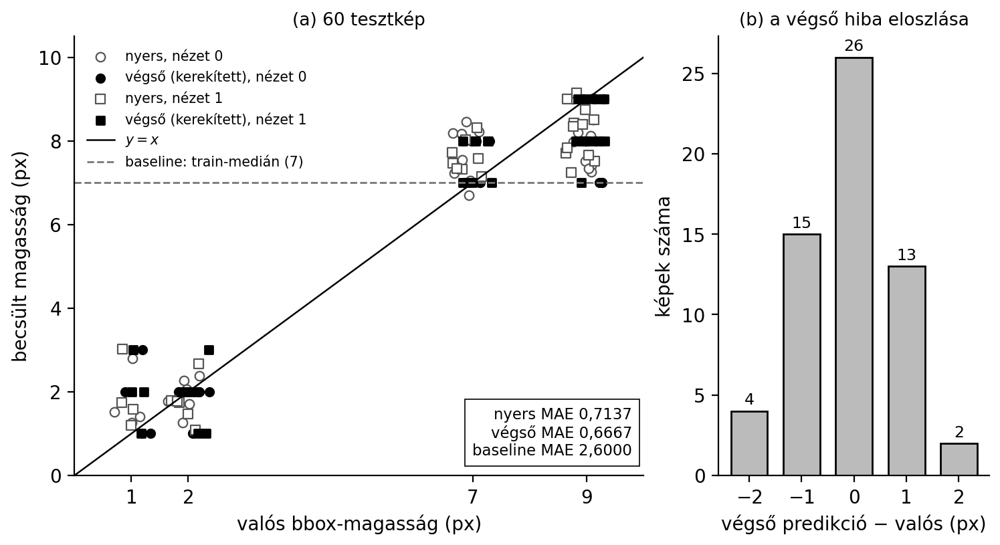

Ez a X. ellenőrző pont: a teljes tananyag matematikai, implementációs és kísérleti teljesítményét egyetlen új, korábban nem tárgyalt feladaton kell önállóan bemutatni. A 40.3. Tudományos kézirat és forrásaudit forrásauditja, a 39.4. Alkalmazási riport és átadás átadási szerződése, a 36.4. IX. ellenőrző pont: lektorálható modellállítás lektorálható csomagja és a 28.4. VII. ellenőrző pont: CNN alkalmazási szerződés alkalmazási szerződése együtt adja azt a keretet, amelyben a hallgató a feladatkiírástól a futtatható modellig és az érvényességi korlátig minden lépést maga végez. Előismeret: a CNN-operátor alakszabályai 14.1. Stride, padding, dilation és kimeneti méret–14.4. Csoportos és depthwise konvolúció, az MSE-regressziós veszteség 7.3. Bináris, multilabel és regressziós cél, a gradiensellenőrzés 15.4. Független gradiensellenőrzési protokoll, a best-checkpoint-választás 24.4. VI. ellenőrző pont: megbízható CNN-training és a scene-szintű mintavételi egység 5.4. Függő képek, seedek és resampling.
Értékelés. A közös 0–4 rubrikát, a PASS-szabályt és a hibatípusonkénti visszautakat az 1.4. Tanulási diagnózis és kísérleti napló „Tanulási főút és ellenőrző pontok” szakasza adja meg; itt csak az eltérés: a riport a hét komponensű projektcsomag, és a PASS része a szóbeli védés is. Ezen a ponton a D3 (adat- és mérési protokoll) és a D4 (bizonyíték és nyomon követhetőség) dimenzió szigorúbb: minden állításhoz seed, verzió és fájlhash tartozik.
Induló kérdés: elegendő-e a korábbi orientáció-osztályozó fejének kicserélése, ha az új cél egy folytonos geometriai mennyiség? Becslés: nem. A target típusa, a veszteség, a metrika, az inference-kimenet normalizálása és a hiba értelmezése mind más szerződést követel; a CNN-gerinc (backbone) architektúrája marad újrafelhasználható, a súlyai nem: az új feladat feje és tanított paraméterei nulláról indulnak.
Feladat: a függelék A. A GlyphLab adatkészlet szakaszában leírt GlyphLab-képekből becsüljük meg az előtér függőleges kiterjedését, azaz a maszk befoglaló téglalapjának magasságát:
A doboz félnyílt pixelkoordinátákkal adott: , ahol , ezért , és a érték elvileg és közé esik; a 24 csak a teljes magasságot kitöltő előtérnél fordul elő. A konkrét GlyphLab-adatban a megfigyelt célok és között vannak.
A bemenet továbbra is egyetlen zajos nézet
,
,
NCHW alakban, float32 típusban. A cél regressziós, nem
osztályozási: a
pozitív egész, de a hálózat valós kimenetet ad. A két nézet ugyanahhoz a
jelenethez tartozik, ezért a
célérték jelenetenként közös; a független mintavételi egység a
scene_id. A felosztás az eredeti szerződést követi:
120/30/30 jelenet train/val/test, osztályonkénti rétegzéssel; a jelenet
mindkét nézete azonos splitbe kerül. A tesztet sem modell-, sem
hiperparaméter-választásra nem használjuk.
A hallgatónak hét beadandó komponenst kell előállítania:
problem, mathematical model, implementation, data, evaluation,
inference, report. A problem egy féloldalas
feladatleírás a fenti szerződéssel; a data a meglévő
képekhez a metadata.csv ymin, ymax oszlopaiból képzett
bbox_height.npy célállomány (a bbox függőleges kiterjedése,
nem a generátor thickness vonalvastagság-paramétere: az
orientációtól és a hossztól is függhet, ezért a becsült mennyiséget nem
szabad vonalvastagságnak nevezni a feladatban és a model cardban),
amelynek SHA-256 lenyomatát a futásnapló rögzíti; a többi komponenst
alább részletezzük.
A matematikai modell felépítése a [B01] jelölését és a [B03] mátrixdifferenciálási konvencióját követi.
A paraméterű modell, ahol a konvolúciós gerinc (backbone) paramétereit, és pedig a kimeneti lineáris réteg súlyát és biasát jelöli ([B02], [S01]),
ahol nyers, aktiváció nélküli kimenet. A veszteség átlagolt MSE:
ahol a batch mérete (a minták száma a batchben), nem a teljes adathalmaz elemszáma.
Az inference-szerződés a nyers kimenetet lezárja:
A kerekítés és a levágás (clip az
tartományra) az abszolút hibát nem mindig ugyanabba az irányba
változtatja. A levágás az
-beli
valódi célhoz képest önmagában nem növelheti a hibát (például
,
:
a hiba
).
A kerekítés növelheti és csökkentheti is:
,
esetén
(csökken),
,
esetén
(nő). Ezért a nyers val MAE szerinti modellválasztás (a folytonos
célhoz) és a végső, kerekített test MAE (az inference-szerződés
kimenete) különböző célt mér; mindkettőt közöljük. A kerekítés
tie-szabálya a torch.round viselkedése: a pontosan
értékek a páros egészre kerülnek (round half to even, [S07]);
az utófeldolgozás verziója
clip(round_half_to_even(t), 1, 24) v1, és ezt az
inference-szerződés rögzíti.
A levezetési követelmény a vizsgafeladatban egy új tételalkalmazás: a kimeneti lineáris réteg gradiensének pontos, alakhelyes levezetése a VJP-konvencióban.
1. lemma (MSE-gradiens a végső lineáris rétegen). Legyen , ahol , az -től függő rögzített jellemzővektor, . Az elemű batchre vett átlagolt MSE veszteségre
Bizonyítás. A láncszabály skalárkoordinátánként: . A 4.3. Jacobi-mátrix, láncszabály és VJP VJP-konvenciójában ([B03]) a upstream a lineáris rétegen -szel, -nel terjed vissza. Itt az „input” egy sora , így
Az alakellenőrzés: skalár, sorvektor, az összeg , ami megegyezik alakjával. A keresztkorreláció-rétegre ez a lemma nem vonatkozik változatlanul; ott az átfedő patch-ek súlygradienseit a 15.1. Súly- és biasgradiens szabálya szerint összegezni kell. ∎
A konvolúciós kimeneti méret tételét 14.1. Stride, padding, dilation és kimeneti méret
alfejezetből idézzük vissza:
.
A vizsgafeladat azt kéri, hogy a hallgató alkalmazza ezt a tételt a
saját architektúrájára, és adjon ellenpéldát olyan
konfigurációra, ahol a képlet nem pozitív kimenetet ad. Ez utóbbi a
Conv2d számára érvénytelen beállítás, tehát a tétel
feltételeinek megsértését mutatja.
A levezetési követelmény kézi kontrollja egy 1D keresztkorrelációs rétegen, az átlagos MSE-vel. Legyen input , kernel , bias , padding , stride , dilation . A kimenet hossza , tehát . Cél . A veszteség
A kernelgradiens az átfedő inputpatch-ekkel: (pozíció 0) esetén
esetén
A két derivált független ellenőrzése középső véges differenciával (, float64): és , vagyis és .
Egy lépésnyi, tanulási rátájú gradienslépést csak a kernelre teszünk; a bias -n marad (a bias frissítése külön döntés, és ez a kontroll kizárólag a kernellépést vizsgálja). Ekkor
a frissítés iránya az adott pontban a negatív gradiens. A csökkenést azonban külön számolással kell ellenőrizni: az új kernel kimenete , így az új MSE
amely nagyobb a kezdeti -nél. Ez a példa megmutatja, hogy egy túl nagy tanulási ráta a helyes gradiens ellenére is növelheti a veszteséget. A súlygradiens-összegzés (15.1. Súly- és biasgradiens) független megerősítése nem maga a kézi képlet, hanem a fenti véges differenciás kontroll, amely a képlettől függetlenül, csak a veszteségfüggvény kiértékeléséből számol.
A labor egyetlen, újrafuttatható szkriptet ad:
lab/n160_bbox_height.py. Munkakönyvtár: a labor
lab/ könyvtára; a szkript az útvonalakat a
Path(__file__) alapján a saját könyvtárához igazítja, ezért
a lab/ könyvtárból futtatva a bemenet
data/images.npy és data/metadata.csv, a
targetet a szkript a ymax-ymin oszlopokból
determinisztikusan állítja elő, és ugyanoda,
data/bbox_height.npy néven menti. A
metadata.csv oszlopai:
index, scene_id, view_id, label, split, xmin, ymin, xmax, ymax;
az index a teljes képtömb sorindexe, a split
értéke train, val vagy test, a
doboz félnyílt xyxy. A metadata sorait nem a CSV sorrendje, hanem az
index mező köti az images.npy soraihoz: az
align_metadata ellenőrzi, hogy az index egyedi és pontosan
a
tartományt fedi le, majd index szerint rendez; a szkript ellenőrzi, hogy
egy véletlenül permutált CSV-sorrendet ugyanarra a képsorrendre rendez,
de a teljes tanítást nem ismétli meg. A scene_split
jelenetenként ellenőrzi a közös splitet, a két nézetazonosítót (0 és 1)
és a közös targetet. Az állomány SHA-256 lenyomatát a futásnaplóba kell
menteni.
# lab/n160_bbox_height.py
import hashlib, json
from pathlib import Path
import numpy as np
import torch
from torch import nn
from torch.utils.data import Dataset, DataLoader
torch.manual_seed(20261020)
np.random.seed(20261020)
DEVICE = torch.device("cpu")
DTYPE = torch.float32
LAB = Path(__file__).resolve().parent
DATA = LAB / "data"
class BBoxHeightNet(nn.Module):
"""Kis CNN-gerinc regressziós fejjel. Bemenet NCHW 1x24x24, kimenet [N,1]."""
def __init__(self) -> None:
super().__init__()
self.features = nn.Sequential(
nn.Conv2d(1, 8, kernel_size=3, padding=1), nn.ReLU(),
nn.MaxPool2d(2), # 24 -> 12
nn.Conv2d(8, 16, kernel_size=3, padding=1), nn.ReLU(),
nn.MaxPool2d(2), # 12 -> 6
)
self.head = nn.Sequential(
nn.Flatten(), # 16*6*6 = 576
nn.Linear(576, 32), nn.ReLU(),
nn.Linear(32, 1),
)
def forward(self, x: torch.Tensor) -> torch.Tensor:
return self.head(self.features(x))
class GlyphBBoxHeight(Dataset):
"""images.npy + bbox_height.npy párosítás a metadata.csv scene_id splitje után."""
def __init__(self, images: np.ndarray, target: np.ndarray, idx: np.ndarray) -> None:
self.x = torch.tensor(images[idx], dtype=DTYPE)
self.t = torch.tensor(target[idx], dtype=DTYPE).unsqueeze(1) # [N,1]
def __len__(self) -> int:
return len(self.x)
def __getitem__(self, i: int) -> tuple[torch.Tensor, torch.Tensor]:
return self.x[i], self.t[i]
POSTPROCESS = "clip(round_half_to_even(t), 1, 24) v1" # torch.round: x.5 -> páros egész
def align_metadata(rows: np.ndarray, n_images: int) -> np.ndarray:
"""A metadata sorait az `index` mező szerint az images.npy soraihoz igazítja."""
index = rows["index"].astype(np.int64)
assert len(index) == n_images, "a metadata sorszáma eltér a képtömbétől"
assert np.array_equal(np.sort(index), np.arange(n_images)), "az index nem 0..N-1 permutációja"
return rows[np.argsort(index)] # ezután az i. sor az i. képé
def scene_split(meta: np.ndarray, target: np.ndarray) -> tuple[np.ndarray, np.ndarray, np.ndarray]:
"""Scene-szintű indexfelosztás; egy jelenet minden nézete azonos splitbe kerül."""
ids, splits = meta["scene_id"], meta["split"]
assert set(np.unique(splits)) == {"train", "val", "test"}
for sid in np.unique(ids):
rows = ids == sid
assert len(set(splits[rows])) == 1, "Egy jelenet több splitben szerepel"
assert sorted(meta["view_id"][rows]) == [0, 1], "a jelenet nézetei hiányosak"
assert len(set(target[rows])) == 1, "a két nézet célja eltér"
return tuple(np.flatnonzero(splits == name) for name in ("train", "val", "test"))
def predict_final(model: nn.Module, x: torch.Tensor) -> tuple[torch.Tensor, torch.Tensor]:
"""Átadási függvény: nyers kimenet és az inference-szerződés szerinti végső predikció."""
model.eval()
with torch.inference_mode():
raw = model(x).squeeze(1)
return raw, torch.clamp(torch.round(raw), 1, 24)
def main() -> None:
torch.set_num_threads(1) # CPU-n szálszámfüggetlen eredmény
images = np.load(DATA / "images.npy") # (360,1,24,24)
rows = np.genfromtxt(DATA / "metadata.csv", delimiter=",", names=True,
dtype=None, encoding="utf-8")
required = {"index", "scene_id", "view_id", "split", "ymin", "ymax"}
assert required <= set(rows.dtype.names or ()), "a metadata.csv oszlopai hiányosak"
meta = align_metadata(rows, len(images))
shuffled = rows[np.random.default_rng(0).permutation(len(rows))]
assert np.array_equal(align_metadata(shuffled, len(images)), meta) # sorrendfüggetlen
bbox_height = (meta["ymax"] - meta["ymin"]).astype(np.float32)
target_path = DATA / "bbox_height.npy"
np.save(target_path, bbox_height)
print("bbox_height_sha256=" + hashlib.sha256(target_path.read_bytes()).hexdigest())
tr_idx, va_idx, te_idx = scene_split(meta, bbox_height)
assert (len(tr_idx), len(va_idx), len(te_idx)) == (240, 60, 60)
assert images.shape == (360, 1, 24, 24) and bbox_height.shape == (360,)
assert images.dtype == np.float32 and np.isfinite(images).all()
assert float(images.min()) >= 0.0 and float(images.max()) <= 1.0
assert np.all((bbox_height >= 1) & (bbox_height <= 24))
model = BBoxHeightNet().to(DEVICE)
opt = torch.optim.Adam(model.parameters(), lr=3e-3) # Adam [P26]
loss_fn = nn.MSELoss()
tr_loader = DataLoader(GlyphBBoxHeight(images, bbox_height, tr_idx),
batch_size=16, shuffle=True)
va_x = torch.tensor(images[va_idx], dtype=DTYPE)
best_va, best_epoch, best_state = float("inf"), -1, None
patience = 5
for epoch in range(30):
model.train()
for xb, tb in tr_loader:
opt.zero_grad()
loss = loss_fn(model(xb), tb)
loss.backward()
opt.step()
va_raw, _ = predict_final(model, va_x)
va_mae = float(np.abs(va_raw.numpy() - bbox_height[va_idx]).mean()) # választó metrika: nyers val MAE
if va_mae < best_va - 1e-6:
best_va, best_epoch = va_mae, epoch
best_state = {k: v.clone().cpu() for k, v in model.state_dict().items()}
patience = 5
else:
patience -= 1
if patience == 0:
break
ckpt = LAB / "checkpoints" / "n160_bbox_height_best.pt"
ckpt.parent.mkdir(parents=True, exist_ok=True)
assert best_state is not None
torch.save(best_state, ckpt)
ckpt_sha = hashlib.sha256(ckpt.read_bytes()).hexdigest()
# átadás: a visszatöltött modell végső predikciói és a teljes inference-szerződés
delivered = BBoxHeightNet().to(DEVICE)
delivered.load_state_dict(torch.load(ckpt, map_location=DEVICE, weights_only=True))
te_x = torch.tensor(images[te_idx], dtype=DTYPE)
raw, final = predict_final(delivered, te_x)
model.load_state_dict(best_state)
assert torch.equal(predict_final(model, te_x)[1], final) # memóriabeli == visszatöltött
out = LAB / "runs" / "n160"
out.mkdir(parents=True, exist_ok=True)
np.savez(out / "test_predictions.npz", index=te_idx, raw=raw.numpy(), final=final.numpy(),
target=bbox_height[te_idx])
contract = {"input": "float32 NCHW (N,1,24,24), [0,1]", "raw_output": "float32 (N,)",
"final_output": "egész 1..24", "postprocess": POSTPROCESS,
"selection_metric": "nyers val MAE (legkisebb)", "best_epoch": best_epoch,
"checkpoint": str(ckpt), "checkpoint_sha256": ckpt_sha,
"claim_refers_to": "final_test_mae (az átadott predikció)"}
(out / "inference_contract.json").write_text(json.dumps(contract, indent=2, ensure_ascii=False))
saved = np.load(out / "test_predictions.npz") # a riport az artifactból számol
raw_test_mae = float(np.abs(saved["raw"] - saved["target"]).mean())
final_test_mae = float(np.abs(saved["final"] - saved["target"]).mean())
train_median = float(np.median(bbox_height[tr_idx]))
baseline_test_mae = float(np.abs(bbox_height[te_idx] - train_median).mean())
test_scene = meta["scene_id"][te_idx]
deltas = []
for sid in np.unique(test_scene):
vals = saved["final"][test_scene == sid]
assert len(vals) == 2, "a teszten minden jelenetnek két nézete kell legyen"
deltas.append(abs(float(vals[0]) - float(vals[1])))
delta_scene_median = float(np.median(deltas))
print(f"best_epoch={best_epoch} best_val_mae_raw={best_va:.4f}")
print(f"raw_test_mae={raw_test_mae:.4f} final_test_mae={final_test_mae:.4f} "
f"baseline_test_mae={baseline_test_mae:.4f} delta_scene_median={delta_scene_median:.4f}")
if __name__ == "__main__":
main()Futtatási parancs a lab/ könyvtárból:
uv run python n160_bbox_height.py. A checkpointot a
nyers validációs MAE választja (ezt a tanítás előtt
rögzítjük), az alkalmazási állítás viszont az átadott, utófeldolgozott
predikcióra, azaz a végső teszt MAE-re vonatkozik; a
script a kettőt külön közli. A tanítás legfeljebb 30 epochig tart, és 5
epoch türelmi idővel leáll, ha a validációs MAE nem javul. A
visszatöltött checkpointból az átadási függvény
(predict_final) állítja elő a teszt nyers és végső
predikcióit; a script ellenőrzi, hogy ez bitre egyezik a memóriában lévő
legjobb állapot végső predikciójával, a predikciókat a
runs/n160/test_predictions.npz, a szerződést a
runs/n160/inference_contract.json fájlba menti, és a teszt
MAE-ket már a mentett artifactból számolja. A következő kimenet egy mért
futás (Python 3.12.3, NumPy 2.5.4, PyTorch 2.15.0+cpu, CPU, 1 szál, seed
20261020); más PyTorch-verzión vagy hardveren a tanítási sorok
eltérhetnek:
bbox_height_sha256=cd9b71e47e517fb9acf96a0838f4f3a7503e12a34423147972973932a9ae7066
best_epoch=15 best_val_mae_raw=0.6465
raw_test_mae=0.7137 final_test_mae=0.6667 baseline_test_mae=2.6000 delta_scene_median=0.0000
A determinisztikusan előállított target 360 képén a dobozmagasság 1
és 9 közé esik. Ez egyetlen seed eredménye; a seed-szórás külön mérés
(36.2. Ismétlések és eredménybizonytalanság). A
checkpoint SHA-256 lenyomata a szerződésfájlban szerepel. A modell
paraméterszáma: első konvolúció
;
második
;
lineáris
;
kimeneti
;
összesen
.
A kimeneti térkép ellenőrzése: 24→24 (Conv,
),
24→12 (Pool 2), 12→12 (Conv,
),
12→6 (Pool 2), csatorna 16, flatten
,
ami illeszkedik a Linear(576,32) bemenetéhez.
Az értékelési metrika képenkénti átlagos abszolút hiba (mean absolute error, MAE) pixelben, valamint a jeleneten belüli két nézet predikciójának különbsége:
A triviális baseline a train-célok mediánja
,
mert az állandó becslések közül a medián minimalizálja az átlagos
abszolút eltérést. A hozzá tartozó teszt MAE az abszolút predikciós hiba
mértéke, nem a szórás. MSE-re optimalizált állandó baseline esetén a
train-célok átlaga a megfelelő választás. A két nézet ugyanahhoz a
jelenethez tartozik, ezért a képenkénti bootstrap nem
használható szignifikancia-állításra: a resampling egysége a
scene_id 5.4. Függő képek, seedek és
resampling. Ha a riport konfidenciaintervallumot közöl, azt
jelenetszintű bootstrapból kell számítani (Efron–Tibshirani, 1993), és
nem szabad független képekből számolt intervallumként értelmezni. Ebben
a leckében a CI nem kötelező elem; a kötelező bizonytalansági kimutatás
a több seedből származó szórás.
Az inference-szerződés: bemenet float32 NCHW
kép; nyers kimenet
,
végső kimenet
a clip(round_half_to_even(t), 1, 24) v1 utófeldolgozással.
A predikciós artifact a teszt indexét, a nyers és a végső predikciót és
a targetet, a szerződésfájl a sémát, az utófeldolgozás verzióját, a
választó metrikát, a best epochot és a checkpoint hash-ét tartalmazza. A
fenti MAE-képlet a végső predikcióra vonatkozik; a nyers MAE
diagnosztikai érték, mert a kerekítés és a levágás mindkét irányba
változtathatja a hibát. A tanítási veszteség MSE, de a best checkpointot
kizárólag a nyers val MAE alapján választjuk; a tesztet csak a
fagyasztott súlyok betöltése után, egyszer értékeljük.
A report a 36.4. IX. ellenőrző pont: lektorálható modellállítás hat komponensét követi: a bizonyítást (1. lemma és a kimeneti méret tétel alkalmazása), a source trace-t (images.npy, bbox_height.npy, metadata.csv, szkript és checkpoint hash-e), a kódot, a run manifestet (seed 20261020, float32, CPU, epochszám, nyers validációs MAE, nyers és végső teszt MAE, utófeldolgozás-verzió), a páros clean–corrupt vagy view–view eredményt és a korlátokat. A korlátszakasz kötelező eleme: a GlyphLab szintetikus adat; a MAE elméleti alsó határa nulla, mert a végső, egész értékű predikció és az egész cél egybeeshet; pozitív elkerülhetetlen hiba csak a feladat és a megfigyelések bizonytalanságának külön indoklásával állítható, és a regresszió nem kalibrált valószínűségi predikció.
Rövid szóbeli védési kérdések:
bbox_height.npy determinisztikusan, a
metaadatokból számolható, miért fontosabb az inputfájlok hash-e és a
transzformáció kódjának verziója, mint egy nem használt generálási
seed?round a váltási pontokon nem differenciálható,
közöttük konstans, tehát a deriváltja majdnem mindenütt nulla és a
határokon nem definiált. Miért okoz ez taníthatósági gondot (nem az,
hogy sehol sem létezne derivált), és miért helyes a
round-ot csak az inference-szerződésbe tenni?Rövid válaszok. 1. A képenkénti split szivárgást
okoz: ugyanazon jelenet két nézete különböző splitbe kerülhet, ezért a
teszt nem új jelenetekre mér. 2. A val MAE önmagában nem zárja ki, hogy
a modell a jelenet fényességéből vagy más spurius jelből becsüljön;
ehhez kontroll kell (például fényességre érzéketlen baseline, korrupt
teszt, jelenetszintű összehasonlítás). 3. A bbox_height.npy
a metadata determinisztikus függvénye, ezért a target előállításának
kódja és a bemeneti fájlok hash-e azonosítja a tényleges adatállapotot;
a generálási seed önmagában nem bizonyítja, hogy a felhasznált fájlok
ugyanazok. 4. A round majdnem mindenütt nulla deriváltú és
a váltási pontokon nem differenciálható, ezért a tanításban nem lehet a
gradiens útjában; a kerekítés csak az inference-szerződés
utófeldolgozása. 5. A rubrika a lektori visszacsatolás belső eszköze,
nem akkreditált osztályzat, és nem helyettesít külső vizsgát vagy
szakmai minősítést.
Gyakori tévedés és ellenpélda. A leggyakoribb hiba a belső értékelési skála akkreditált jeggyé alakítása. Ellenpélda: ha egy projekt mind az öt dimenzióban 4 pontot kap, az azt jelenti, hogy az adott, a feladatkiírásban rögzített feltételek között önállóan helyes és ellenőrizhető; ez nem bizonyítja, hogy a modell új adaton vagy éles környezetben is 4-es teljesítményt ad. A rubrika a lektori visszacsatolás belső eszköze, nem helyettesíti a 36.3. Szakirodalmi reprodukció és attribúció alfejezetben megkövetelt forrásauditot. Hasonló kategóriahiba: a teszt MAE-t két tizedesjegy pontossággal közölni egyetlen seedből, és ezt a modell várható hibájának nevezni; a seed-szórás külön mérés 36.2. Ismétlések és eredménybizonytalanság.
F1 (fogalmi, nehézség 1). Nevezze meg az orientáció-osztályozó és a függőleges kiterjedés regressziós szerződésének négy különböző komponensét (target, loss, output, metrika), és adjon mindegyikre egy-egy pontos értéktartományt. Az orientáció-osztályozó célja int64, ahol 0 = függőleges, 1 = vízszintes, 2 = átlós; a regressziós cél valós érték. A modell paraméterei : a gerinc, a kimeneti réteg; a batch mérete .
F2 (levezetési, nehézség 2). Alakítsa alkalmazott
tétellé a 14.1. Stride, padding, dilation és
kimeneti méret kimeneti méretképletét a saját architektúrájára, és
adjon ellenpéldát olyan
ötösre, amelyre a képlet nem pozitív egész kimenetet ad; indokolja,
miért érvénytelen ez a Conv2d hívásra.
F3 (implementációs, nehézség 2). Egészítse ki a
labor kódját egy rövid önteszttel, amely (a)
véletlen bemenetre ellenőrzi, hogy a kimenet alakja
,
(b) a végső Linear(32,1) réteg súlyára vonatkozó analitikus
gradienst összehasonlítja az autograd gradienssel float64 pontossággal,
abszolút toleranciával.
F4 (hibakeresési, nehézség 1). A következő hibás eljárásban azonosítsa a hibát, következményét és javítását: „A 360 képből véletlenszerűen választunk 240/60/60 képet train/val/test részre, és a modellt MSE-vel tanítjuk.”
F5 (kísérlettervezési, nehézség 3). Tervezzen kísérletet a kérdésre: „Javítja-e a harmadik konvolúciós réteg hozzáadása a teszt MAE-t?” Adja meg a protokollt, a baseline-t, a változó tényezőt, a scenestratified splitet, a metrikát, a seed- és erőforrás-kezelést, valamint a következtetés érvényességi határát.
F1. Osztályozás: target
int64, loss CrossEntropyLoss logitsból, output logit
,
metrika accuracy. Regresszió: target
,
loss MSE, output
,
metrika MAE pixelben. A round/clip csak
inference-utófeldolgozás, nem a tanítási cél része.
F2. A modell két konvolúciójára
,
így
;
a poolra a MaxPool2d(2) alapértelmezései érvényesek:
,
,
,
és ceil_mode=False, azaz lefelé kerekítés. Ekkor a számláló
,
tehát
,
másodszor
.
Páratlan bemeneten látszik, miért nem
a számláló:
,
,
ceil_mode=False mellett
,
a hibás
viszont 3-at adna; páros
-ra
a két alak a lefelé kerekítés miatt egybeesik, ezért ott a hiba rejtve
marad. ceil_mode=True mellett
(PyTorch 2.15.0+cpu-ban ellenőrizve). Ellenpélda:
esetén a képlet
,
tehát a kimeneti méret nem pozitív. A Conv2d ilyen
konfigurációra hibát ad, mert az effektív kernelméret
meghaladja a bemenet méretét; a szükséges pozitív kimeneti méret
feltétele sérül. A törtnek nem kell egésznek lennie: például
,
,
,
,
mellett
,
és az érvényes kimenet
.
F3. A megoldás vázlata:
def self_test() -> None:
model = BBoxHeightNet().double() # float64 kontroll
x = torch.randn(2, 1, 24, 24, dtype=torch.float64, requires_grad=True)
y = model(x)
assert y.shape == (2, 1), y.shape
t = torch.tensor([[3.0], [7.0]], dtype=torch.float64)
loss = torch.nn.functional.mse_loss(y, t) # mean reduction
a = model.head[2](model.head[1](model.head[0](model.features(x)))).detach() # (2,32)
g = (2.0 / x.shape[0]) * (y.detach() - t) # (2,1)
grad_W_analytical = g.T @ a # (1,32)
loss.backward()
grad_W_autograd = model.head[3].weight.grad # (1,32)
assert grad_W_analytical.shape == grad_W_autograd.shape == (1, 32)
torch.testing.assert_close(grad_W_analytical, grad_W_autograd, atol=1e-6, rtol=0)Itt a model.head[1] a Linear(576,32) réteg,
a model.head[2] a ReLU, ezért az
aktiváció alakja
.
Az upstream
alakja
,
így
alakja
,
azonos a model.head[3].weight súlyéval. Az explicit
alakkontroll megelőzi a véletlen broadcastingből eredő téves sikeres
tesztet. A batch-átlag
szorzója a lemma szerint.
F4. A hiba a megfigyelési egység figyelmen kívül
hagyása. Következmény: egy jelenet két nézete különböző splitbe
kerülhet; ugyanaz a geometriai tartalom a trainben és a tesztben is
megjelenik, a teszt MAE optimistán torzított lesz. Javítás: a splitet a
scene_id-re kell csoportosítani, azaz az 1.3. Adatfelosztás és a megfigyelési egység
alfejezetben rögzített scene-stratified eljárást kell használni;
visszaellenőrzés: minden scene_id pontosan egy splitben
szerepeljen.
F5. Lehetséges terv. Kérdés: harmadik konvolúciós réteg hatása. A réteg hozzáadása a paraméterszámot szükségszerűen növeli; ez a beavatkozás része, nem zavaró tényező (36.1. Állításból kísérleti terv), a kapacitásillesztett kontroll (azonos paraméterkeret más elrendezésben) külön, opcionális kérdés. Protokoll: azonos vetőmag, azonos CPU, azonos float32 dtype; a baseline a jelenlegi kétkonvolúciós modell; a változat egy harmadik, csatornás, , réteg a második pool előtt. Megfigyelési egység: jelenetpár. Split: a befagyasztott 120/30/30 scene felosztás marad; az ismétlés öt inicializációs seeddel, ugyanazon a splitten (az új split vagy a keresztvalidáció más bizonytalanságot mérne, és ütközne a korábban befagyasztott teszttel). Metrika: a két modell jelenetszintű, páros MAE-különbsége ugyanazon tesztjeleneteken, valamint a medián; az architektúra-összehasonlításra a páros különbség a mérvadó, a csak a nézet-konzisztencia diagnosztikája. A konfiguráció és a best checkpoint kiválasztása kizárólag validációs MAE szerint történik, és csak ezután következik az egyszeri, páros tesztkiértékelés: jelenetenként egy különbség, 95%-os jelenetszintű bootstrap CI, döntési szabály „a CI nem tartalmaz nullát, és a medián abszolút különbség legalább 0,1 pixel”. Erőforráskeret: öt seed × két modell × legfeljebb 30 epoch, CPU. Következtetési határ: a GlyphLab szintetikus adat; az eredmény nem általánosítható természetes képekre, és a seed-szórás miatt egyetlen futtatásból nem vonunk le általános architektúra-következtetést. A nyers MAE-ket, a páros különbséget, a hatásnagyságot és a bizonytalanságot külön kell jelenteni. A tanítási recept a labor receptje mindkét modellre (Adam, , batch 16, legfeljebb 30 epoch, 5 epoch türelem, a nyers val MAE alapján választott checkpoint), a seedek –, az erőforrás CPU.
A X. ellenőrző pont egy új, regressziós feladaton bizonyítja az önálló munkavégzést: a GlyphLab-képből a maszk befoglaló magasságát becsüljük. A szerződés hét komponense – probléma, matematikai modell, implementáció, adat, értékelés, inference, jelentés – együtt adja a lektorálható csomagot. A levezetési követelmény az MSE-gradiens végső lineáris rétegre vonatkozó alakhelyes VJP-je és a konvolúciós kimeneti képlet egy érvénytelen konfigurációval vett ellenpéldája. A labor kis CPU-s PyTorch-szkriptet ad; a determinisztikusan számított cél- és baseline-értékeket a lecke közli, a tanítási mérőszámokat a tanuló saját futása állítja elő. A belső 0–4 rubrika lektori eszköz, nem akkreditált osztályzat; a részletes rubrika és a PASS-szabály a 1.4. Tanulási diagnózis és kísérleti napló alfejezetben van.
Az elvégzett ellenőrző pont lezárja a tananyag főútját: a hallgató egy új célon végigviszi a teljes modellezési ciklust. A hét komponens sablonja független a GlyphLabtól, amennyiben a target, a split és a metrika szerződését újradefiniálja. A könyv záró függelékei – a GlyphLab-adatleírás, a jelölésjegyzék, a szójegyzék és a bibliográfia – a 40.4.13. szakaszban találhatók, és a korábbi leckék hivatkozásai is ezekre mutatnak.
round half to even konvenciót
a szabvány rögzíti.A GlyphLab a könyv saját, helyben generált oktatási adatkészlete;
külső képet, személyes adatot vagy letöltött adathalmazt nem tartalmaz.
A forrása a lab/generate_data.py generátor (verzió 1.0,
alapértelmezett seed 20261020), a részletes adatszerződés
pedig a laborcsomag ADATOK.md fájlja. A generátor 180
jelenetből két zajos nézetet állít elő, így 360 képet ad. A feladat a
vonalorientáció felismerése; ez szintetikus, szűk feladat, nem
természetes képi benchmark.
| Fájl | Alak, típus | Jelentés |
|---|---|---|
data/images.npy |
(360, 1, 24, 24), float32 |
NCHW képek, értékkészlet |
data/masks.npy |
(360, 1, 24, 24), uint8 |
Az előtér 0/1 maszkja |
data/labels.npy |
(360,), int64 |
Az orientáció osztályindexe |
data/corrupted_test.npy |
(60, 1, 24, 24), float32 |
Csak a teszt képei zajjal és fényességgradienssel |
data/metadata.csv |
360 rekord | A képek metaadatai |
data/manifest.json |
JSON | Verzió, seed, alakok, splitdarabszámok, SHA-256 |
Az osztályok: 0 = függőleges (vertical), 1 = vízszintes
(horizontal), 2 = átlós (diagonal). A
metadata.csv oszlopai:
| Oszlop | Típus | Jelentés |
|---|---|---|
index |
int64 | A teljes képtömb sorindexe; nem a CSV sorszáma |
scene_id |
string | A független mintavételi egység azonosítója,
G<label>-<scene> alakú (például
G0-0000) |
view_id |
int64 | A jelenet nézetének azonosítója (0 vagy 1) |
label |
int64 | Az orientáció osztályindexe (0, 1, 2) |
split |
string | train, val vagy test |
xmin, ymin, xmax,
ymax |
int64 | A maszk befoglaló doboza, félnyílt xyxy |
A doboz nullától indexelt, félnyílt intervallum:
,
.
A doboz a maszk nemnulla pixeljeinek legkisebb befoglaló téglalapja. Ha
egy maszk mégis üres, a doboz mind a négy koordinátája
:
(szentinel, a Feladat- és annotációs döntés
39.1. alfejezet definíciója szerint); a jelenlegi generátor minden
maszkban garantál legalább egy előtér-pixelt, ezért a szállított adatban
üres maszk nem fordul elő. A corrupted_test.npy sorrendje a
metadata.csv test sorainak sorrendjét követi, és
ugyanazokat a jelenet–nézet párokat tartalmazza, ezért a clean–corrupt
összehasonlítás páros.
| Split | Független jelenet | Kép | Jelenet/osztály |
|---|---|---|---|
| train | 120 | 240 | 40 |
| val | 30 | 60 | 10 |
| test | 30 | 60 | 10 |
A split szabálya: egy scene_id minden nézete ugyanabba a
splitbe kerül; a felosztás osztályonként rétegzett. A képek száma ezért
240/60/60. A scene_id a split és a csoportos
bizonytalanságbecslés egysége; a kép csak a predikció és a képenkénti
metrika egysége. A maszk, a doboz és a scene_id nem lehet a
modell bemenete. A tesztet legfeljebb egyszer, a befagyasztott
modellválasztás után értékeljük; a korrupt teszt nem használható
hiperparaméter-választásra.
Újragenerálás a lab/ könyvtárból:
uv run python generate_data.py --output data, majd
uv run python quickcheck.py. Azonos NumPy-verzió, seed és
generátor-beállítás mellett a generátor ugyanazokat a fájlokat adja; más
verzió, platform vagy numerikus backend esetén a bitazonosság nem
garantált. A quickcheck.py a hash-t, az alakot, a
tartományt, a splitet és a doboz–maszk viszonyt ellenőrzi.
A könyv a következő alapjelöléseket használja. A helyi szakaszokban ettől csak kifejezett, ott megadott megfeleltetéssel lehet eltérni.
| Objektum | Jelölés | Jelentés |
|---|---|---|
| Bemeneti vektor | Oszlopvektor az absztrakt képletekben | |
| Batchelt vektoradat | Egy megfigyelés egy sor | |
| Affín réteg súlya | PyTorch Linear súlyalak |
|
| Affín réteg | alakja | |
| Skalár loss gradiense | Alakja megegyezik alakjával | |
| Jacobi-mátrix | Sor: output, oszlop: input | |
| VJP | ||
| Képbatch | NCHW | |
| Konvolúciós súly |
a groups paraméter |
|
| Osztályozási logit | Aktiváció előtti pontszám | |
| Többosztályos target | int64 osztályindex | |
| Konvolúciós kimenet | Szimmetrikus zero padding, egy dimenzió |
Jelölésütközések: a jelentése lehet padding, valószínűség vagy dropout-arány; a lehet dilatáció, dimenzió vagy döntési szabály; a lehet kernelméret vagy osztályszám; az lehet veszteség, rétegszám vagy hossz; a lehet szélesség vagy súly; az lehet batchméret vagy mintaszám; a lehet osztály vagy csatorna; a lehet szórás, szigmoid vagy GELU. Ezeket minden lecke a saját szövegében oldja fel, és a szükséges helyen más betűre nevez.
A magyar folyószövegben tizedesvessző áll (), a matematikai listák és halmazok elemeit pontosvessző választja el (), a kódban és a kód kimenetében tizedespont szerepel. Az ezres tagolás szóköz.
| Magyar | Angol | Megjegyzés |
|---|---|---|
| alapvonal | baseline | Összehasonlítási viszonyítási modell |
| szerződés | contract | A könyvben specifikáció (adat-, modell-, inference-szerződés); nem jogi értelem |
| köteg | batch | A tanítás egy lépésének mintahalmaza |
| mintavételi egység | sampling unit | A GlyphLabban scene_id |
| felosztás | split | train/val/test |
| vetőmag | seed | A véletlenszám-generátor állapota |
| ellenőrzőpont | checkpoint | Mentett modellállapot |
| logit | logit | Aktiváció előtti pontszám |
| stride / lépésköz | stride | A konvolúció lépése |
| padding / kitöltés | padding | A szegély kitöltése |
| dilation / tágítás | dilation | A kernel mintavételi távolsága |
| MAC | multiply-accumulate | Szorzás-összeadás művelet |
| VJP | vector-Jacobian product | Vektor–Jacobi-szorzat |
| inference / következtetés | inference | Betanított modell kiértékelése |
| bootstrap | bootstrap | Újramintavételes bizonytalanságbecslés |
| adatszivárgás | leakage | A teszt információjának bekerülése a tanításba |
| összeomlás | collapse | Reprezentáció vagy kimenet degenerálódása (például minden minta ugyanarra a vektorra képződik) |
| downstream feladat | downstream task | Az előtanított reprezentációt használó célfeladat |
| pretext feladat | pretext task | Önfelügyelt előtanítási feladat |
| kevert pontosság | mixed precision | float16/bfloat16 és float32 együttes használata |
| tenzor | tensor | Többdimenziós tömb |
| affin | affine | Lineáris + eltolás |
| puffer | buffer | Nem tanított, mentett állapot (pl. BN statisztika) |
| veszteség | loss | Optimalizált célfüggvény |
| pontosság | accuracy | Helyes döntések aránya |
| precizitás | precision | TP/(TP+FP) |
| visszahívás | recall | TP/(TP+FN) |
| beadandó | deliverable | A feladat záróeredménye (riport, táblázat vagy kód) |
| főút | main path | A könyv kötelező, kis helyi CPU-s, eredeti adatos végrehajtási útvonala |
A leckék saját forráslistái a helyi hivatkozásokhoz mérvadók; az alábbi gyűjtés a könyvben visszatérő kanonikus hivatkozásokat egységesíti. A források a megadott kiadásra/verzióra vonatkoznak; a konkrét tétel állítását a hivatkozott szakaszban kell ellenőrizni.
A könyv közös, 0–4 skálájú rubrikája az 1.4. Tanulási diagnózis és kísérleti napló „Tanulási főút és ellenőrző pontok” szakaszában van definiálva; ez a függelék csak összefoglalja. Az öt dimenzió: D1 matematikai helyesség, D2 kód és futtathatóság, D3 adat- és mérési protokoll, D4 bizonyíték és nyomon követhetőség, D5 az állítás és korlátai. A szintek: 0 hiányzik; 1 hibás; 2 lényegében helyes, de hiányosan ellenőrzött; 3 helyes és ellenőrzött; 4 helyes, ellenőrzött és új helyzetre is indokoltan alkalmazott.
A PASS-szabály: (a) az ellenőrző pont laborjának minden
assert-je és toleranciaellenőrzése a saját futtatásban
átmegy; (b) mind az öt dimenzió legalább 3; (c) a riport csak
ténylegesen lefuttatott kód kimenetét közli. A riport a hat komponensű
modellállítást tartalmazza (bizonyítás, forrásnyom, kód, futási jegyzék,
páros eredmény, korlátok), a futási jegyzék pedig a seedet, a csomag- és
eszközverziót, valamint a bemeneti fájlok SHA-256 lenyomatát. A rubrika
belső lektori eszköz, nem akkreditált osztályzat.
A könyv tíz, egyenként négy fejezetből álló blokkon vezeti végig az olvasót: a matematikai és programozói előkészítéstől a tenzorokon, a valószínűségen és az optimalizáláson át a perceptronig, a backpropagationig és a PyTorch-tanításig; majd a kép diszkrét jele, a konvolúció és gradiense, az equivariance, a klasszikus és modern CNN-architektúrák, az inicializálás, a regularizálás, az adat- és értékelési protokoll, az osztályozás, a detektálás, a szegmentálás, az embedding, az autoencoder, az önfelügyelt tanulás, a generatív modellek, a szekvenciák, az inference és a hatékonyság, végül a magyarázhatóság, a kísérlettervezés, a saját operátor és a három projekt következik.
A tananyag végére a hallgatónak önállóan kell tudnia: egy alkalmazási ötletből mérhető feladatot és adatszerződést készíteni; a matematikai modellt, a veszteséget és a metrikát összehangolni; a modellt Pythonban implementálni és a gradiensét ellenőrizni; a splitet a megfigyelési egység szerint kialakítani; a kísérletet seeddel, verzióval és hash-sel dokumentálni; a tesztet egyszer, a választás után értékelni; és az eredményt a korlátaival együtt jelenteni. A könyv nem ígér minden laborhoz előre lefuttatott, gépektől függetlenül bitazonos kimenetet: a közölt számokat a tanulónak a saját, dokumentált környezetében kell előállítania és összevetnie. A GlyphLab szintetikus adat, a toy kísérletek pedig nem helyettesítenek valós alkalmazást vagy teljes cikkreprodukciót.
A záró projekt beadása akkor fogadható el, ha a hét komponens (probléma, matematikai modell, implementáció, adat, értékelés, inference, jelentés) hiánytalan, a futási jegyzék a PASS-szabályt teljesíti, és a jelentés kimondja a mérés érvényességi korlátait. A rubrika és a PASS-szabály nem akkreditált osztályzat; a szóbeli védés a beadás szakmai megvédését szolgálja.